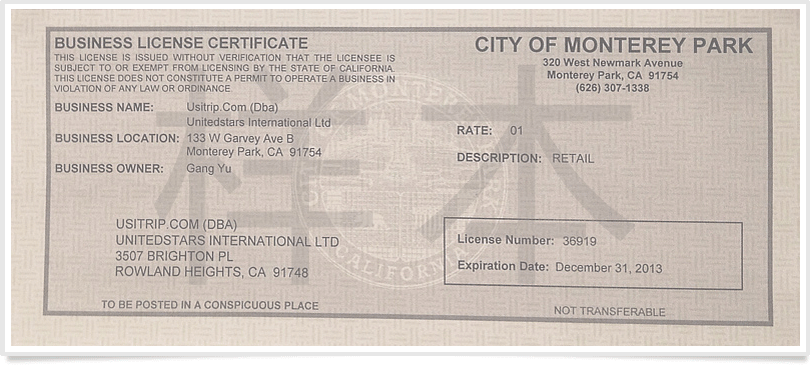
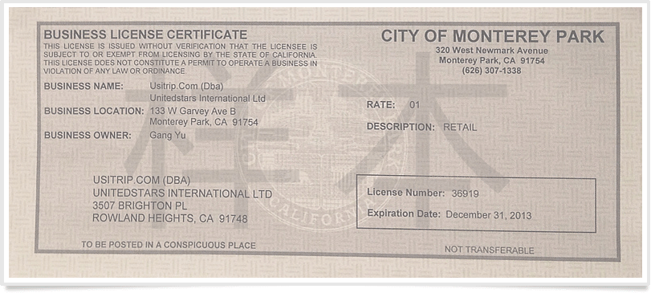

如果为您服务的是美国旅行社，一定拥有以下营业执照。
以下为usitrip.com走四方旅游网美国旅行社的营业执照，在business name上拥有者为usitrip.com，与公司网站保持一致，为真正的美国旅行社。
如果为您服务的是美国旅行社，一定拥有以下营业执照。
以下为usitrip.com走四方旅游网美国旅行社的营业执照，在business name上拥有者为usitrip.com，与公司网站保持一致，为真正的美国旅行社。
CST证书为美国加州旅行社特许执照，只有拥有CST证书才可在美国经营旅游产品。每个CST证书都有有效期及证书号。
每个证书号均可在美国加州检查院官方网站查询到对应证书。查询网址： https://webapps.doj.ca.gov/sotas/sellerSearch.action，进入网站后，在Registration
# ex:处输入证书号点search按钮即可查询到结果。
只有在美国当地注册的公司才可以在美国联邦商业监督局网站搜索到评级认证，美国联邦商业监督局只对美国公司进行评级，
中国公司不能进行评级。
评级按高到低：A+ > A > B+ > B > C+ > C
您可按以下方式进行搜索：
1、输入网址： http://chicago.bbb.org/find-business-reviews/ 在Search下方输入网址点seach按钮搜索即可看到结果。
2、以usitrip.com为例，输入Usitrip.com点击搜索后，立即出现网站认证A级认证信息。